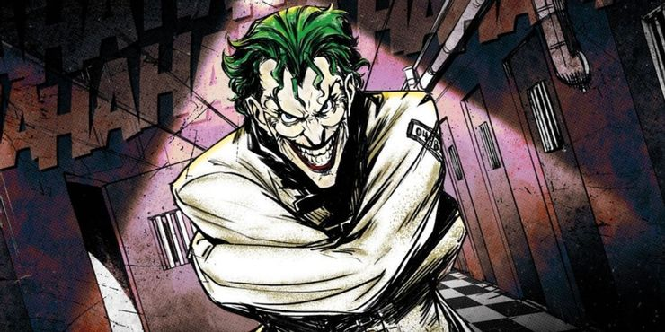
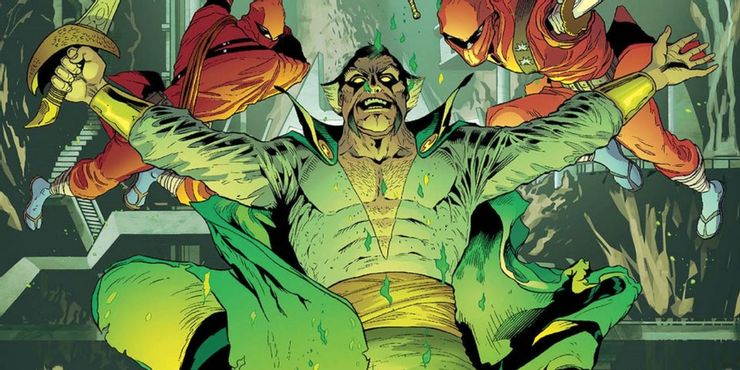
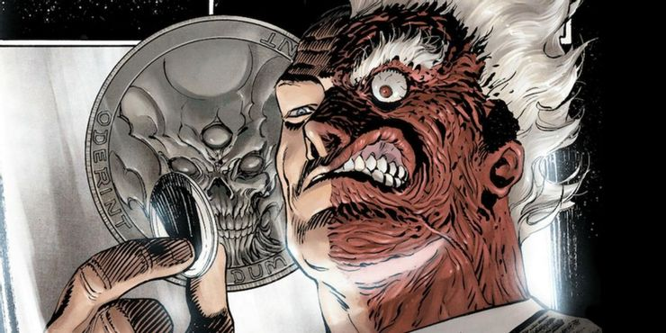
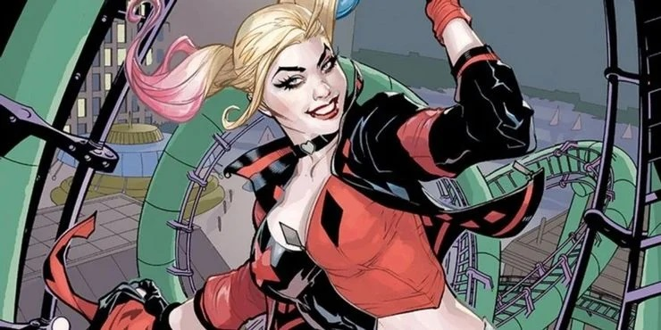
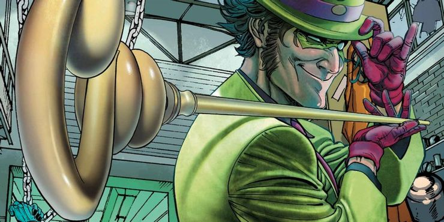
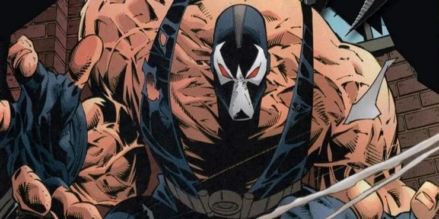

Although Batman is, himself, one of the most popular comic book characters ever and needs no further introduction, one of the things that certainly made him as appealing as he is are his villains. Batman’s Rogues Gallery, as the villains are collectively called, contains numerous names that have appeared in the several decades long history of the characters. In fact, Batman’s villains are so good that people usually consider them to be the best villains in the comic book industry.
"VILLAINS"






THE JOKER
"THE CLOWN PRINCE OF CRIME"
No name strikes terror into the hearts of Gotham’s citizens quite like the Joker. In a city overrun with larger-than-life criminals, the always-laughing villain stands alone. A complete psychopath with no moral compass whatsoever, the Joker, whose real name and identity remain completely unknown, is characterized by his chalk-white skin, green hair and a permanent rictus grin stretched across his face. But there isn’t a single thing funny about this particular clown, who only finds humor in the suffering of others.
The Joker first appeared in Gotham City around the same time that the Batman arrived on the scene, and since their very first confrontation, the Clown Prince of Crime has been the Dark Knight’s most formidable nemesis. While Batman represents justice and order, the Joker is his complete opposite, seeing himself as an agent of chaos, the living embodiment of the cruel randomness of fate. The Joker’s psychosis causes his personality to shift between goofy prankster and mass murderer on a dime, making it impossible to predict his next move. It’s this unpredictability that really makes him such a dangerous opponent.
THE CLOWN PRINCE OF CRIME
RA'S AL GHUL
"THE DEMON'S HEAD"
Ra's al Ghul, sometimes written Rā's al Ghūl, is a supervillain and enemy of Batman. A former healer who's name translates to "head of the demon", he is a criminal mastermind and leader of the League of Assassins. In most stories, Ra's' goal is to save the Earth from possible ecological devastation, often by destroying most of the planet's population or bringing the world under his control. Though brilliant master of strategy with knowledge in various fields, Ra's al Ghul's greatest asset are his Lazarus Pits, which have allowed him to live centuries and even restore himself from death.
THE DEMON'S HEAD
TWO FACE
"HARVEY DENT"
Harvey Dent was Gotham City's amiable and courteous district attorney and one of Batman's strongest allies (until Sal "Boss" Maroni threw acid in his face, hideously scarring him). It also fractured his mental state, causing him to become Two-Face, a criminal mastermind obsessed with duality and the number two and is one of Batman's greatest enemies. His former good luck charm, a "two-headed" silver dollar with one side defaced, has been seen as a reflection of Dent's half-scarred visage. He flips it to decide the fates of his victims. Despite Batman's efforts to reform his former ally, Dent is consumed by his fixation on chance. His crimes are designed to prove his diametric philosophy.
HARVEY DENT
HARLEY QUINN
"DR. HARLEEN QUINZEL"
Sometimes love can make people do crazy things. Other times? It drives them completely insane. Such is the case with Harley Quinn, formerly Dr. Harleen Quinzel. A promising psychologist and intern at Arkham Asylum in Gotham City, Harleen was given the chance to get up close and personal with the Joker, an experience that wound up ending…badly. Harleen became obsessed with her subject, and after falling madly in love with the Clown Prince of Crime, she helped him escape the asylum. Her love for the Joker inspired Harleen to adopt a new identity, that of Harley Quinn, the Joker’s sidekick-slash-love interest—whether he wanted one or not. (Most of the time? He did not.)
n time, Harley came to realize the Joker was holding her back and she struck out on her own. She became an entrepreneur and a member of several slightly less-than-reputable super teams (including the Suicide Squad), Gotham City’s all-girl gang the Gotham City Sirens, and a traveling sideshow. Along the way Harley has become one of the most popular super-villains in the DC Universe, thanks in part to her versatility, charisma and cheery-but-deranged outlook on life. After all, as Harley would say, if you're going to go a little crazy, you may as well sit back and enjoy the ride!
DR. HARLEEN QUINZEL"
THE RIDDLER
"EDWARD NYGMA"
Known for his purple domino mask and green question mark-covered costume, either as a skintight cat suit or a business suit and bowler hat and his special question mark shaped cane, the Riddler is obsessed with riddles, puzzles, and word games. He delights in forewarning police and Batman of his capers by sending them complex clues.
Like most Batman villains, the Riddler has become a darker, more three-dimensional character in recent years. Whereas he was once portrayed as a playful but sane criminal trickster, he is now the victim of an intense obsessive compulsion. This was first introduced in the 1966 issue of Batman (titled, "The Riddle-less Robberies of the Riddler") in which he tried to refrain from leaving a riddle, but failed. This compulsion has been a recurring theme, albeit with a darker edge, as shown in a 1999 issue of Batman Gotham Adventures, in which he tried to commit a crime without leaving a riddle, but fails: "You don't understand. .. I really didn't want to leave you any clues. I really planned never to go back to Arkham Asylum. But I left you a clue anyway. So I... I have to go back there. Because I might need help. I... I might actually be crazy."
EDWARD NIGMA
BANE
"ANTONIO DIEGO"
Bane is an escaped convict from an island prison in South America and a super-villain/assassin. Bane has abnormal physical strength as a result of having undergone experiments involving a derivative of the drug Venom. He became known as "The Man Who Broke the Bat" when he broke Batman's back, forcing Bruce Wayne to give up the Batman persona while he recuperated. Bane was originally created by writers Chuck Dixon and Doug Moench and artist, Graham Nolan, from a concept by Denny O'Neil. He first appeared in Batman: Vengeance of Bane #1 (January 1993).